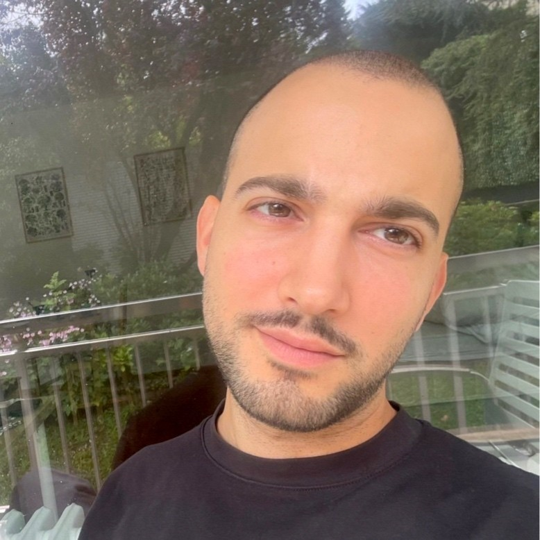

Antoine Bouyeure
Neuroscientist
I am a researcher working on memory, fear learning, and ultra-high-field fMRI, with a particular interest in laminar neuroimaging, representational analyses, and the neural mechanisms of traumatic and autobiographical memory.
You can find here my academic profile, research output, and links to my professional and personal works.
